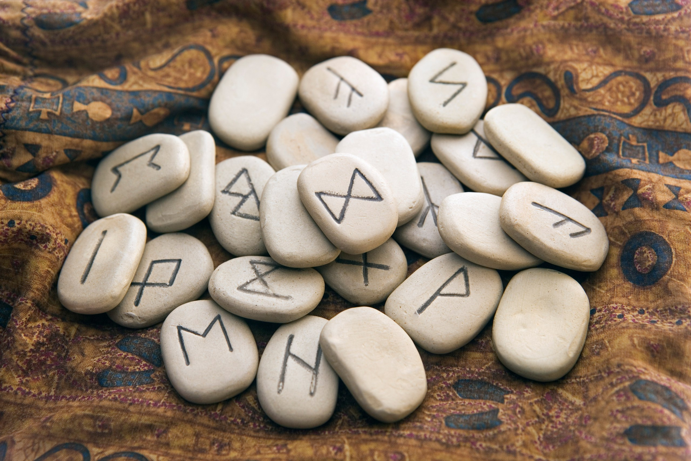
| Изображение | Название | Свойства от РС | Общие модификаторы (в т.ч. от вставленных Рун) |
|---|---|---|---|
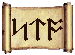 | STORM | Мана +700; восст. маны +20. | ОД на удар -0,1; ОД +40; выносливость +6; воля +4; мана +700; восст. здоровья +40; восст. маны +20. |
| VORTEX | ОД на удар -0.3; атака +90; защита +90. | ОД на удар -0,5; атака +90; защита +90; ловкость +6; выносливость +6; парирование +6; восст. здоровья +40. | |
| EXORT | Здоровье +400; мана +600. | ОД на удар -0,2; выносливость +6; здоровье +400; мана +600; восст. здоровья +40; парирование +6. | |
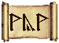 | WYWIRN | ОД +15; выносливость +15; здоровье +200. | ОД + 15; броня +50; крит. удар +13; устойчивость +25; выносливость +23; здоровье +200; восст. здоровья +40. |
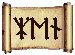 | ZENIT | Пробой брони +110; реакция +20. | ОД на удар -0,1; броня +50; крит. удар +13; пробой брони +142; выносливость +6; реакция +30. |
| AURELIUM | Телосложение +10; здоровье +800; устойчивость +20; восст. здоровья +20. | ОД + 40; ОД на удар -0,1; устойчивость +20; телосложение +14; броня 50; здоровье +1100; восст. здоровья +60; сопротивление +140. | |
| ELEMENTUM | ОД на удар -0.4; броня +70; выносливость +8; воля +8; здоровье +300; мана +300; сопротивление +50; парирование +20; устойчивость +20; реакция +20; восст. маны +50. | ОД на удар -0,7; ОД +80; броня +70; крит. удар +13; телосложение +4; выносливость +14; воля +8; здоровье +300, мана +300, сопротивление +120, парирование +20, устойчивость +20, реакция +20, восст. маны +50. | |
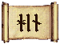 | JINADA | Сила +4; телосложение +4; здоровье +300; крит. удар +30. | Здоровье +900; крит. удар +43; броня +50; интеллект +6; сила +10; телосложение +4. |
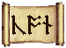 | CONQUEST | Интеллект +9;воля +4; мана +800; восст. здоровья +20. | ОД -0,2; крит. удар +13; интеллект +13; воля +8; выносливость +6; мана +800; сопротивление +70; восст. здоровья +20; восст. маны +20. |
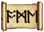 | OMEGA | ОД на удар -0.3; защита +140; парирование +5; реакция +5. | ОД -0,5; защита +140; ОД +40; ловкость +4; здоровье +300; парирование +5; реакция +5. |
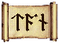 | TANATOS | Броня +50; здоровье +900; сопротивление +70. | ОД -0,1; броня +50; крит. удар +13; воля +4; выносливость +12; хп +1500; сопротивление +70. |
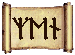 | XENOS | Атака +20, защита +30; ОД +20; ловкость +7; здоровье +150; устойчивость +10. | ОД -0,2; атака +20; защита +30; ОД +20; ловкость +7; воля +4; крит. удар +13; здоровье +150; устойчивость +10; парирование +6. |
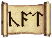 | CATACLYSM | Броня +20; интеллект +5; воля +10; мана +500; сопротивление +20; устойчивость +10; восст. здоровья +70 | Броня +20; ОД +40; телосложение +4; интеллект +5; воля +14; выносливость +6; хп +600; мана +500; сопротивление +20; устойчивость +35; восст. здоровья +70; восст. маны +40. |
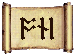 | ONIKZ | Сила +5; крит. удар +20; пробой брони +35 | ОД -0,1; сила +6; крит. удар +33; пробой брони +62; броня +50; атака +30. |
| DEVOTION | Атака +50, броня +30 ОД +10; сила +2 телосложение +2 ловкость +2 выносливость +3; здоровье +450; крит. удар +35; пробой брони +30; реакция +10. | ОД на удар -0,3; ОД +10; атака +50; броня +80; крит. удар +48; сила +8; телосложение +2; ловкость +8; выносливость +9; здоровье +450; пробой брони +30; реакция +10. |
Информация с игрового форума.